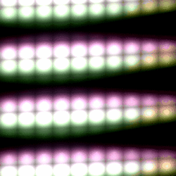

About
A computer engineering student.
GitHub: @antoineMoPa
Twitter: @antoineMoPa
I create gifs from code & math.
Visit my tumblr : https://dontcode.tumblr.com/
And my giphy : http://giphy.com/channel/antoinemopa
Projects :
|  |
ShaderGif
Code in GLSL & generate gifs. |
|
Cinema
A place to show my GLSL fragment shaders. Contains fractals, landscapes & retro glitches. |
|
|
Mandelbrot & Julia sets
Mandelbrot and Julia sets rendered in Javascript (slower tthan GLSL implementations in Cinema). |
|

|
Graph
A user interface for data manipulation. Add nodes and plug them together. Work in (paused) progress. |
|
Lamp Spectral Power Distribution Database
Ruby on Rails web application project with the light pollution research group at the Cégep de Sherbrooke. |
|
|
Python Playground
Simple particle physics simulations, fractals, waves. |
|
|
Chaotic Lines and Points
Javascript experiment - Click on the screen to make points appear. |
|
|
Wave simulation
Some intuitive 2D fluid simulation. (No Navier-Stokes) |
|
|
Triangular: cellular automata experiments
Cellular automata with sound export. |
|
|
Fun with Javascript page
This is actually my previous home page. |
|
|
Javascript Sound Playground
Code in javascript and produce sound in your browser. (examples included) |
|

|
Canvas Animations
Create simple animations in your browser! (With gif export) |

|
JS Canvas to Gif
Write canvas code and get a gif. (Read instructions at the bottom) |

|
mucalc.com
A node/mathjs project: multi-user math logbook with plotting. |